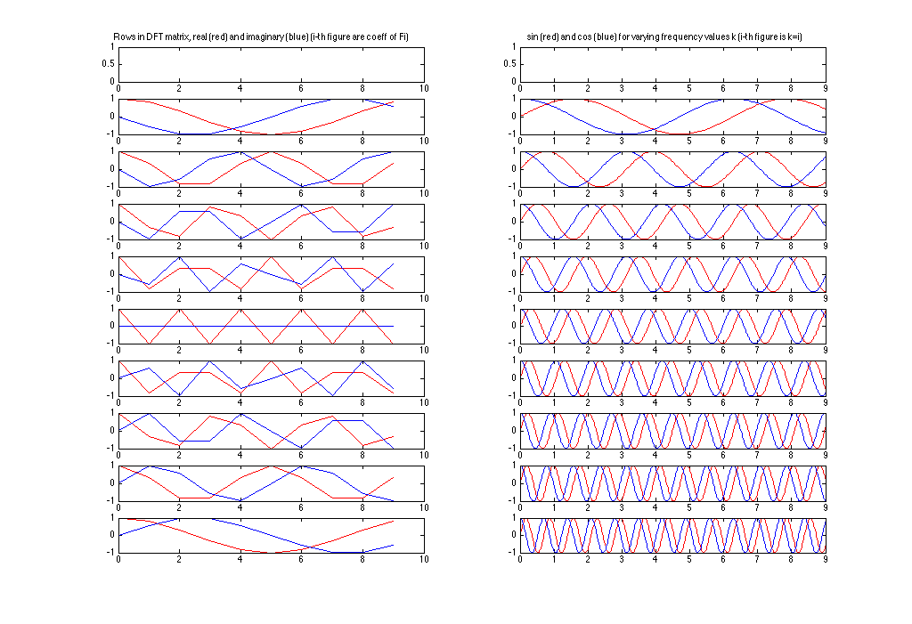

Contents
close all
clear all
task 1
figure('Position', [100, 100, 1024, 800], 'name','Plots of cos(2pi*k*x/N) Plots');
N = 16;
idx = 1;
for k=1:16
h = subplot(4,4,idx);
fplot(@(x) cos((2*pi()*k/N)*x), [0, 16])
hold on
stem(cos((2*pi()*k/N)*(1:16)),'fill','-.');
hold off
title(strcat('k=',num2str(idx)))
idx = idx + 1;
end
disp(['N = ', num2str(N), ' thus N+1 = ', num2str(N+1), ' samples are used.']);
disp(['Hence, the sample rate f_s is equal to ', num2str(N), ' samples per time unit.']);
disp(['Since the Nyquist frequency f_n is equal to 0.5*f_s']);
disp(['It follows f_n = ',num2str(N/2),' for N equal to ',num2str(N)]);
disp(['Since k denotes a frequency we can set k = f_n = ', num2str(N/2), '(i.e. hit k hits Nyquist frequency)']);
disp(['Then omega = 2*pi*k/N = 2*pi*(N/2)/N = pi']);
disp('');
N = 16 thus N+1 = 17 samples are used.
Hence, the sample rate f_s is equal to 16 samples per time unit.
Since the Nyquist frequency f_n is equal to 0.5*f_s
It follows f_n = 8 for N equal to 16
Since k denotes a frequency we can set k = f_n = 8(i.e. hit k hits Nyquist frequency)
Then omega = 2*pi*k/N = 2*pi*(N/2)/N = pi

task 2
M = 10;
W_loop = zeros(M,M);
for m=0:M-1,
for n=0:M-1,
W_loop(m+1,n+1) = exp((-1i*2*pi()*m*n)/M);
end
end
IDX = repmat((0:M-1),M, 1);
Cmn = IDX.*IDX';
phi = 2*pi()*Cmn/M;
W = cos(phi)-1i*sin(phi);
deltaW = (W - W_loop);
if(abs(sum(deltaW(:))) < 1E-12)
disp('W is okay')
else
disp('Error: W does not correspond to its loop version!')
end
disp('Let U := W/sqrt(M)')
U = (W / sqrt(M));
eps = 1E-12;
cond1 = abs(abs(det(U))-1) < eps;
cond2 = abs(sum(sum(U*U'-eye(M)))) < eps;
cond3 = abs(sum(sum(U'*U-eye(M)))) < eps;
if( cond1 + cond2 + cond3 == 3 )
disp('|det(U)| = 1 and U*U = UU* = I holds true');
else
disp('Error: At least one condition, |det(U)| = 1 and U*U = UU* = I, does not true');
end
figure('Position', [100, 100, 1024, 800], 'name', 'real and imag DFT coefficent W plots');
for m=0:M-1
subplot(M,2,2*(m+1)-1);
plot(0:M-1, real(W(m+1,:)), 'r', 0:M-1, imag(W(m+1,:)), 'b');
if(m==0)
title('Rows in DFT matrix, real (red) and imaginary (blue) (i-th figure are coeff of Fi)');
end
end
for k=0:M-1
subplot(M,2,2*(k+1));
fplot(@(x)sin(k*x), [0,M-1], 'r');
hold on;
fplot(@(x)cos(k*x), [0,M-1], 'b');
if(k==0)
title('sin (red) and cos (blue) for varying frequency values k (i-th figure is k=i)');
end
end
disp('My Observations:');
disp('Elements in W are equal to e^(-i*2*pi*k/M) = cos(-2*pi*k/M) + i*sin(-2*pi*k/M) (Euler Fromula)');
disp('real(e^(-i*2*pi*k/M)) = cos(2*pi*k) (cos is even function');
disp('imag(e^(-i*2*pi*k/M)) = -sin(2*pi*k/M) (sin is odd function');
disp('Until Index M/2 + 1 (assuming M is even) the follwoing holds true:');
disp('See first M/2 + 1 rows in first column in subfigure plots');
disp('Therefore plotting real(e^(-i*2*pi*k/M) gives us a cosine wave with period k');
disp('and plotting imag(e^(-i*2*pi*k/M) gives us a sine wave with period k');
disp('Index m=M/2 has imag = 0');
disp('The periods descrease symmetrically like they increased from this index on.');
disp('In addition, since the real part is a cos wave which is an even function');
disp('the plot of the k-th index is the same as (M/2 - k + 1)-th index (assuming M is even)');
disp('Similarly, the can reason for sine, but it is flipped since sine is an even function');
disp('i.e. sine at k-th plot corresponds to same plot times -1 of (M/2 - k + 1)-th');
disp('To make this observation clear');
disp('Set M=10 in this task and we assume that the first figure is labeled by index 1');
disp('Comparing 3rd figure in column 1 with the 9th figure in column 1, we see that ');
disp('their red curves are the same and that the blue curve of the 3rd one is -1 times the 9th one');
disp('furthermore both have a period equal to 2');
x = (2*pi()*(0:M-1));
for k=0:M-1,
Fk = W*cos(x)';
matlabFk = fft(cos(k * x))';
dftsAreTheSame = abs(sum(Fk-matlabFk)) < eps;
if(dftsAreTheSame == 1)
disp(['For k=',num2str(k),' W*f_k is the same as Matlab`s FFT{f_k}'])
else
display('fail')
end
end
W is okay
Let U := W/sqrt(M)
|det(U)| = 1 and U*U = UU* = I holds true
My Observations:
Elements in W are equal to e^(-i*2*pi*k/M) = cos(-2*pi*k/M) + i*sin(-2*pi*k/M) (Euler Fromula)
real(e^(-i*2*pi*k/M)) = cos(2*pi*k) (cos is even function
imag(e^(-i*2*pi*k/M)) = -sin(2*pi*k/M) (sin is odd function
Until Index M/2 + 1 (assuming M is even) the follwoing holds true:
See first M/2 + 1 rows in first column in subfigure plots
Therefore plotting real(e^(-i*2*pi*k/M) gives us a cosine wave with period k
and plotting imag(e^(-i*2*pi*k/M) gives us a sine wave with period k
Index m=M/2 has imag = 0
The periods descrease symmetrically like they increased from this index on.
In addition, since the real part is a cos wave which is an even function
the plot of the k-th index is the same as (M/2 - k + 1)-th index (assuming M is even)
Similarly, the can reason for sine, but it is flipped since sine is an even function
i.e. sine at k-th plot corresponds to same plot times -1 of (M/2 - k + 1)-th
To make this observation clear
Set M=10 in this task and we assume that the first figure is labeled by index 1
Comparing 3rd figure in column 1 with the 9th figure in column 1, we see that
their red curves are the same and that the blue curve of the 3rd one is -1 times the 9th one
furthermore both have a period equal to 2
For k=0 W*f_k is the same as Matlab`s FFT{f_k}
For k=1 W*f_k is the same as Matlab`s FFT{f_k}
For k=2 W*f_k is the same as Matlab`s FFT{f_k}
For k=3 W*f_k is the same as Matlab`s FFT{f_k}
For k=4 W*f_k is the same as Matlab`s FFT{f_k}
For k=5 W*f_k is the same as Matlab`s FFT{f_k}
For k=6 W*f_k is the same as Matlab`s FFT{f_k}
For k=7 W*f_k is the same as Matlab`s FFT{f_k}
For k=8 W*f_k is the same as Matlab`s FFT{f_k}
For k=9 W*f_k is the same as Matlab`s FFT{f_k}
